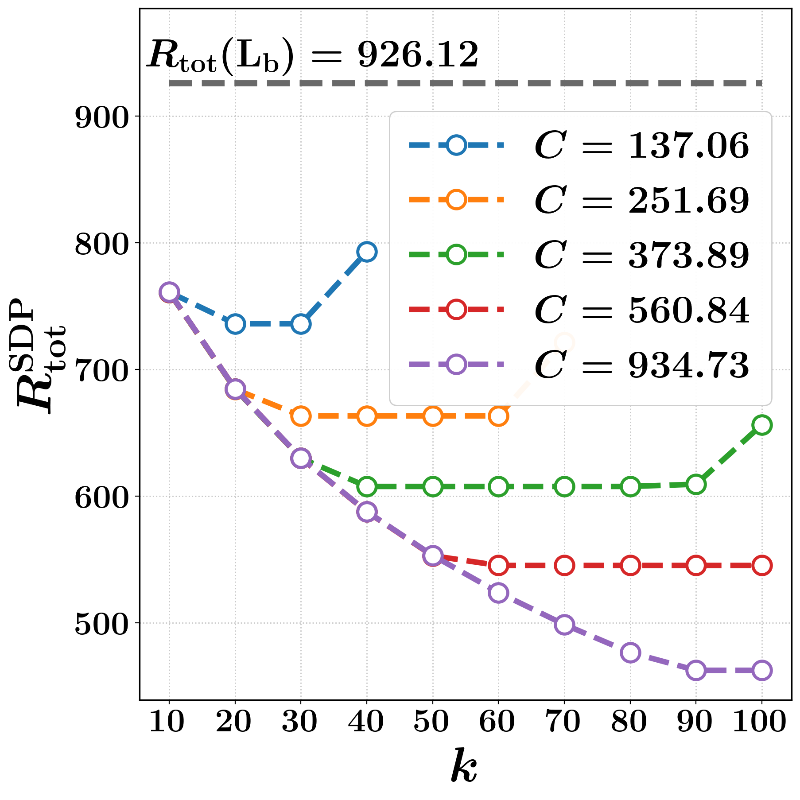
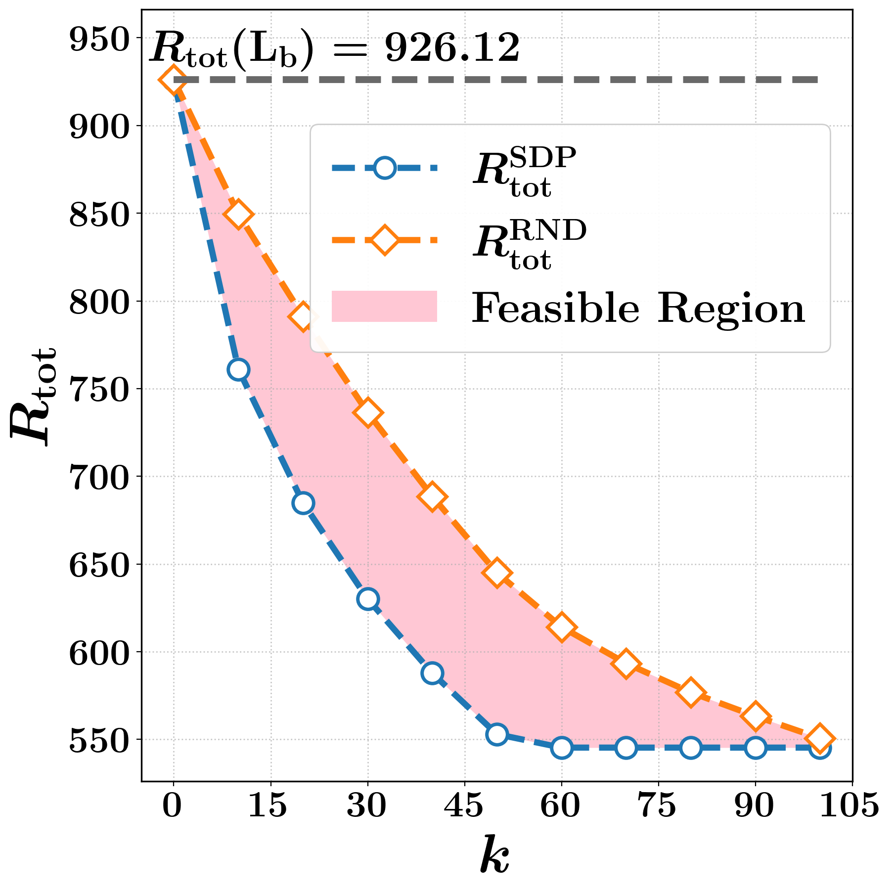
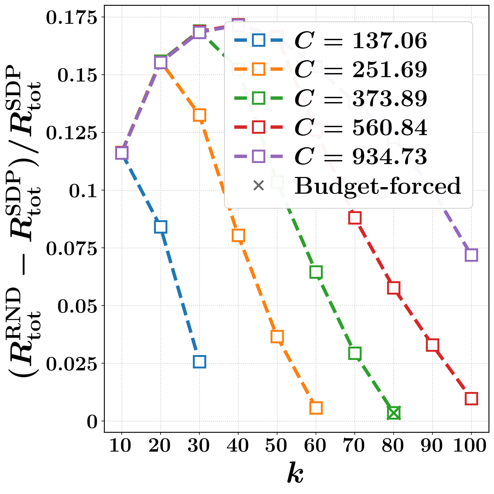
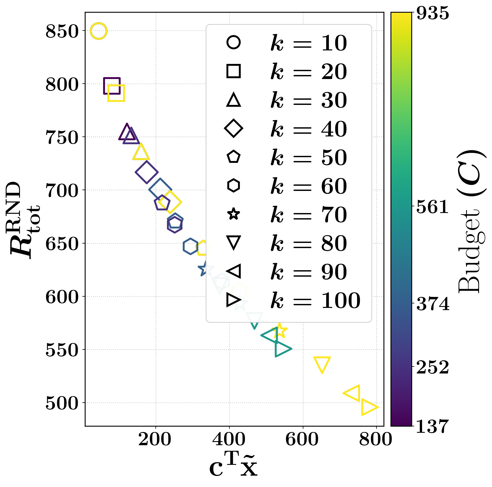
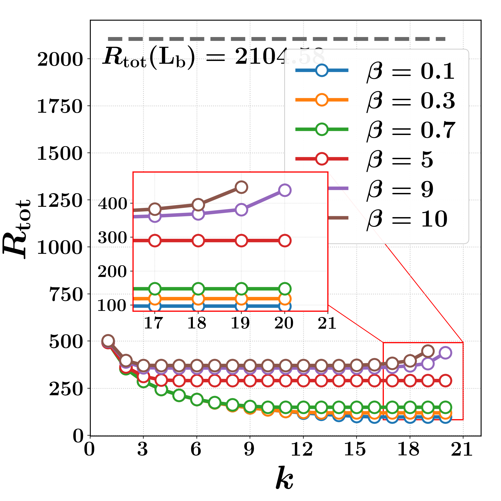
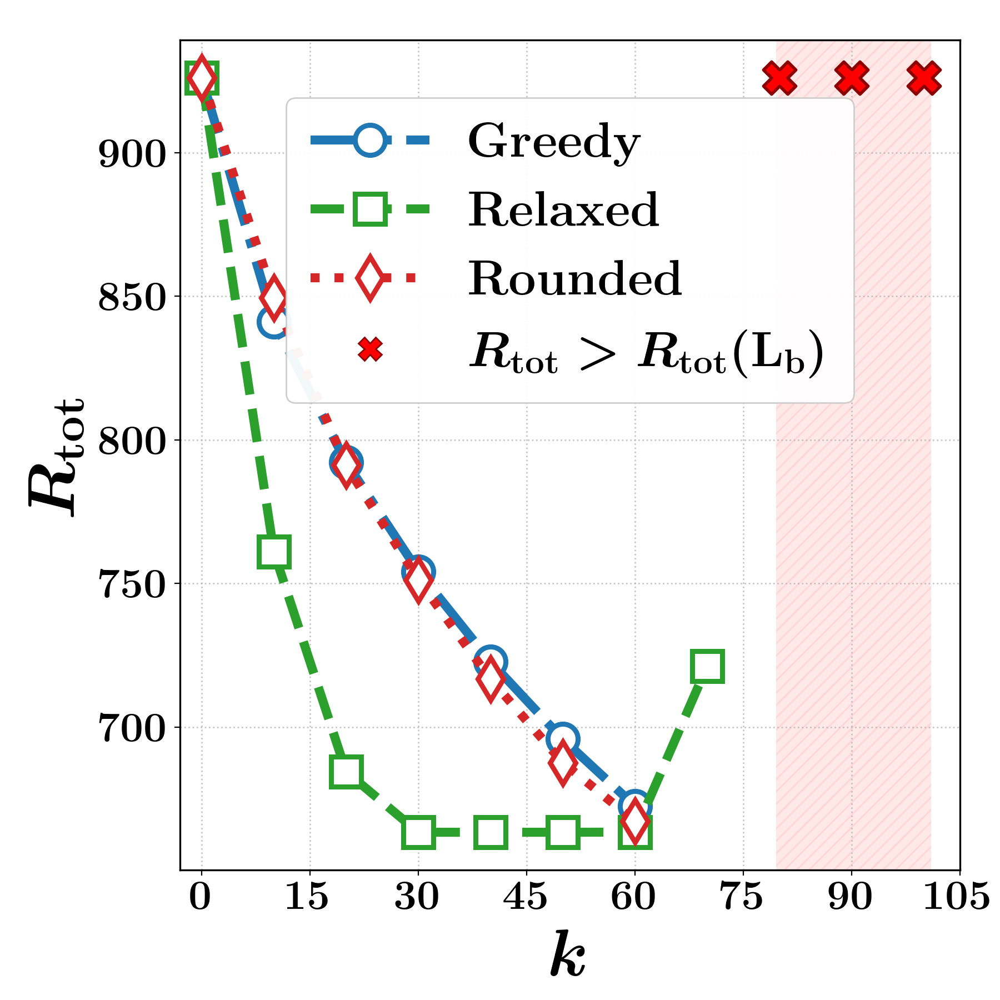
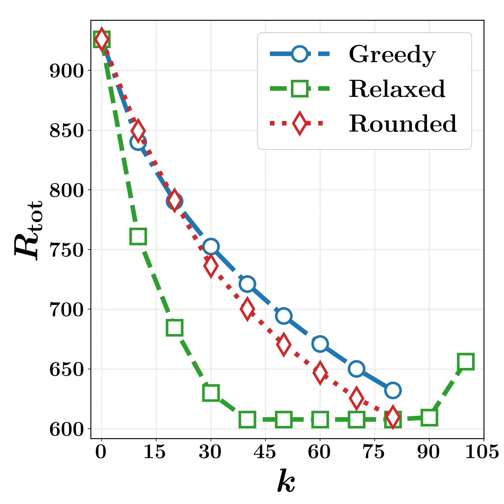
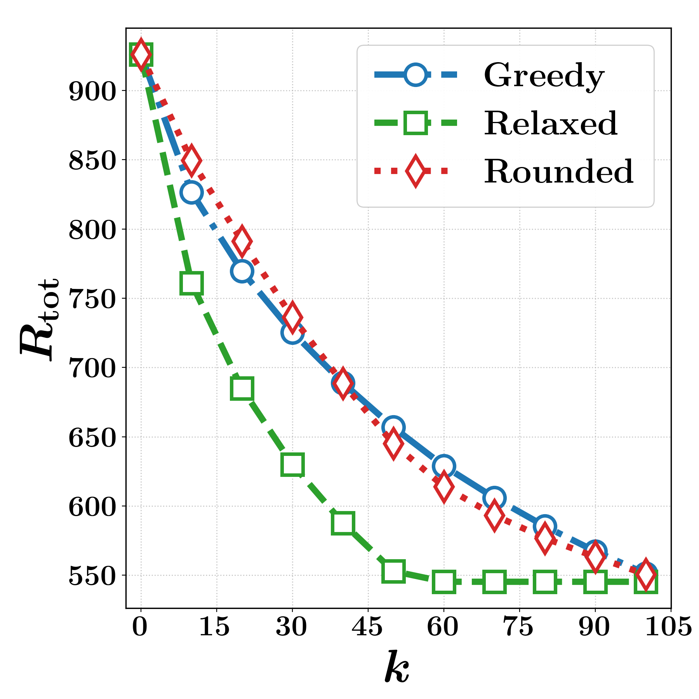

Enhancing the robustness of deployed communication and transportation networks against failures and disruptions is critical for reliable operation. We quantify total effective resistance as a tractable robustness proxy and seek to reduce it by adding new links to the network. However, in many applications, this leads to a computationally challenging joint design problem that couples discrete edge selection with continuous weight allocation, while accounting for heterogeneous per-unit link costs. We address this selection-and-sizing combinatorial problem for augmenting a given weighted base graph, and obtain a semidefinite relaxation that yields a convex certificate-producing surrogate. The relaxation is recast as a standard cone program and solved efficiently using a first-order operator-splitting method. A rounding procedure over the relaxed solution yields a feasible discrete design with an a posteriori optimality gap. As a scalable baseline, we also propose a greedy algorithm that exploits rank-one updates to accelerate candidate evaluation. Experiments on synthetic and real networks demonstrate that the method produces cost-aware augmentations that significantly reduce effective resistance under a global budget constraint.
Index terms
Network robustness · total effective resistance · semidefinite programming · operator splitting · Sherman-Morrison rank-one update.
Augmenting a network that is already deployed
Network robustness is central to the design and operation of transportation, communication, and brain networks. A principled way to quantify it is through spectral measures of the graph Laplacian, and among these the total effective resistance (Kirchhoff index) is widely adopted. Defined as the sum of reciprocals of the nonzero Laplacian eigenvalues, its evaluation and optimization rely on Laplacian pseudoinverses, which become a computational bottleneck on large graphs.
We work in the augmentation regime. The base graph $\mathcal G(V, E_{\mathrm b}, \mathbf W_{\mathrm b})$ is already operational: its edges and weights are immutable. The design variables are restricted to selecting and sizing a small number of new links from a candidate set $E_{\mathrm c}$, so every upgrade decision is judged by its marginal impact on the running network. Because the base Laplacian reshapes both the objective landscape and the cost-weight trade-off, optimizing the candidate set in isolation and then superimposing it can be suboptimal.
Each candidate $e=\{v_i,v_j\}$ carries an incidence vector $\mathbf a_e$, a design weight $w_e \ge 0$ modelling link strength (conductance, bandwidth, inverse delay), and a per-unit deployment cost $c_e > 0$ reflecting length, terrain, or installation overhead. Selecting exactly $k$ links under a global budget $C$ gives a mixed-integer program:
The perspective box bounds tie weight feasibility to selection: $z_i = 0$ forces $w_i = 0$, while $z_i = 1$ enforces $w_i \in [w_{\min}, w_{\max}]$. The budget constraint couples selection and sizing through cost, and the combinatorial edge selection renders the problem NP-hard.
Contributions
- A cost-aware formulation of budgeted graph augmentation that jointly selects and sizes exactly $k$ new links on top of an immutable weighted base graph, under heterogeneous per-unit costs.
- A semidefinite relaxation repurposed as a certificate-producing surrogate, giving a certified lower bound on achievable robustness for each instance.
- A cone-program reformulation solved by a first-order operator-splitting method, avoiding explicit Laplacian inverses.
- A rounding-and-repair procedure that returns a feasible discrete design together with an a posteriori relative optimality gap.
- A cost-aware greedy baseline using Sherman-Morrison rank-one updates for fast marginal-gain evaluation.
A relaxation that certifies its own quality
Relaxing $\mathbf z \in \{0,1\}^p$ to $[0,1]^p$ is not enough on its own: evaluating $R_{\mathrm{tot}}$ still requires solves with the shifted Laplacian $\mathbf M(\mathbf w) \coloneqq \mathbf L(\mathbf w)+\mathbf 1\mathbf 1^\top/n \succ 0$, at $\mathcal O(n^3)$ worst-case cost, and naive sparsification distorts the Laplacian spectrum. A Schur-complement lift with an auxiliary matrix variable $\mathbf R \succeq 0$ removes every explicit inverse while preserving convexity.
Proposition 1
Assume the base graph is connected, so $\mathbf M(\mathbf w) \succ 0$ for all feasible $\mathbf w$. Then $R^{\mathrm{SDP}}_{\mathrm{tot}} \le R^{\mathrm{MI}}_{\mathrm{tot}}$, and at any optimum $(\mathbf R^\star,\mathbf w^\star,\mathbf z^\star)$ of $(\mathcal P_1)$ we have $\mathbf R^\star = \mathbf M^{-1}(\mathbf w^\star)$. The linear matrix inequality is equivalent to $\mathbf R \succeq \mathbf M^{-1}(\mathbf w)$ by the Schur complement, and since $\operatorname{Tr}(\mathbf R - \mathbf M^{-1}(\mathbf w)) \ge 0$, minimizing $n\operatorname{Tr}(\mathbf R)$ forces equality, reproducing the trace-of-inverse objective.
Rounding and repair
The relaxation does not return an integer solution, so a feasible design for $(\mathcal P_0)$ is constructed directly from $(\mathbf w^\star, \mathbf z^\star)$: take the $k$ largest entries of $\mathbf z^\star$ (ties broken by smaller unit cost $c_i$) to form $\widehat{\mathbf z}$, project the weights onto the induced box via $\widetilde w_i=\min\{\max(w_i^\star,\,w_{\min}\widehat z_i),\,w_{\max}\widehat z_i\}$, and if the budget is exceeded, scale along the segment toward $w_{\min}\widehat{\mathbf z}$. When $\mathbf c^\top (w_{\min}\widehat{\mathbf z}) > C$ no feasible weights exist for that selection, and one must reduce $k$, raise $C$, or swap out the most expensive edges.
The lower bound from the relaxation and the upper bound from any feasible rounded design bracket the true optimum, so the gap ratio is an instance-wise measure of solution quality rather than a worst-case guarantee.
Cone-program reformulation and operator splitting
Problem $(\mathcal P_1)$ is converted into an equivalent standard cone program by applying the scaled vectorization $\operatorname{svec}(\cdot)$ to the symmetric variables, with off-diagonal entries scaled by $\sqrt 2$ so that trace inner products are preserved. The block LMI becomes an affine map plus a PSD slack $\mathbf S_{\mathrm{SDP}} \in \mathbb S_+^{2n}$, and $\mathbf s_{\mathrm{SDP}} \coloneqq \operatorname{svec}(\mathbf S_{\mathrm{SDP}})$ enters the standard cone form. The resulting cone program is solved with a first-order operator-splitting method, which handles large-scale instances at a much lower per-iteration cost, at the expense of more iterations to reach high accuracy.
Greedy augmentation with rank-one updates
As a fast feasible baseline, edges are added sequentially, each step choosing the candidate with the largest predicted marginal decrease in $R_{\mathrm{tot}}$. Adding $e=(v_i,v_j)$ with incidence $\mathbf a \coloneqq \mathbf e_{v_i}-\mathbf e_{v_j}$ and weight $w \ge 0$ gives $\mathbf M' = \mathbf M(\mathbf w) + w\,\mathbf a\mathbf a^\top$, and the Sherman-Morrison identity makes the update explicit.
Trial weights follow a cost-aware provisional spend $s \coloneqq C_{\mathrm{rem}}/k_{\mathrm{rem}}$, clamped to the admissible interval as $w_{(v_i,v_j)} \coloneqq \max\{w_{\min},\min\{w_{\max},\,s/c_{(v_i,v_j)}\}\}$. The procedure repeats until $k$ edges are added or the budget can no longer cover any remaining candidate at $w_{\min}$.
Synthetic spatial graphs and a real road network
Setup
The synthetic instance is an undirected weighted base graph with $n=100$ vertices at fixed planar coordinates. Base weights are lognormal, $\ln Z \sim \mathcal N(0,1)$, modelling the skewed capacity statistics common in spatial networks; candidate weights are bounded by $w_{\min}=Q_{0.75}$ and $w_{\max}=Q_{0.95}$ of that same distribution, so added links represent engineered upgrades. The candidate set is built by $k$-means partitioning of the coordinates into $K=3$ regions, taking intra-region $k_{\mathrm{in}}=3$ nearest-neighbor links plus a sparse inter-region backbone, which reproduces the hub-and-spoke structure of practical network design.
Costs follow a fixed-charge network design model, $\mathbf c = c_{\mathrm{fixed}}\mathbf 1 + \beta\,\mathbf d_c$, where $c_{\mathrm{fixed}}=1.5$ is the per-link overhead and $\beta=0.6$ scales the length penalty. Entries of $\mathbf d_c$ are normalized lengths $d_e/\bar d$, keeping units consistent across instances.
Budgets are deduced from the cost structure rather than fixed a priori. With $C_{\min}(k) \coloneqq w_{\min}\sum_{i=1}^{k} c_{(i)}$ over the $k$ cheapest candidates, five levels are centred on the anchor $C_{\min}(k_{\max})$: two at the feasibility thresholds of roughly $\tfrac13 k_{\max}$ and $\tfrac23 k_{\max}$, and two above the anchor at $1.5\times$ and $2.5\times$. This spans tightly constrained to essentially unconstrained regimes regardless of graph geometry.
Bounds, feasibility, and the cost trade-off
{kind=link}

{kind=link}

{kind=link}

{kind=link}

Figure 1. (a) $R_{\mathrm{tot}}^{\mathrm{SDP}}$ versus $k$. (b) Feasible region at $C=560.84$. (c) Relative gap $(R_{\mathrm{tot}}^{\mathrm{RND}}-R_{\mathrm{tot}}^{\mathrm{SDP}})/R_{\mathrm{tot}}^{\mathrm{SDP}}$ versus $k$ for the strategic budgets. (d) Pareto front: $R_{\mathrm{tot}}^{\mathrm{RND}}$ versus spent budget for fixed $k$, across cap budgets.
Comparison against the greedy baseline
{kind=link}

{kind=link}

{kind=link}

{kind=link}

Figure 2. (a) Real-world California road network. Synthetic random spatial network at three strategic budgets: (b) $C=251.69$, (c) $C=373.89$, (d) $C=560.84$.
What the experiments show
Across budgets the SDP relaxation supplies a lower bound that falls rapidly for small $k$ and then saturates as the marginal gain per edge diminishes. As the budget tightens, two effects appear: the relaxation stays feasible for all $k$ at large budgets but becomes infeasible from $k=80$ onward at $C=251.69$, and the greedy method exhausts its budget after only $61$ edges at that level, against the full $k_{\max}=100$ at $C=560.84$. At the anchor budget all methods remain feasible but operate near the boundary, where the relaxation curve flattens and then rises for large $k$ because the budget pushes many added edges toward $w_{\min}$ and dilutes their marginal benefit. Shaded regions and bold cross markers mark the $k$-values where even $w_{\min}$ on every selected edge exceeds the budget, so the solver declares infeasibility and returns no improving solution.
On real data, a $500$-node sample of the largest connected component of the California road network with unit base weights and candidate weights in $[1,5]$ shows $R_{\mathrm{tot}}^{\mathrm{SDP}}$ decreasing monotonically in $k$ before flattening. Raising the length-penalty scale $\beta$ lifts the whole curve; for $\beta \in \{9,10\}$ it starts bending upward as the solution drives many candidate weights to $w_{\min}$, and at $\beta = 10$ adding $20$ edges already renders $(\mathcal P_1)$ infeasible.
Together the results confirm that the strategically derived budget levels capture the three regimes of interest: budget-relaxed, marginally feasible, and budget-constrained. The greedy baseline does not improve on the rounded objective, but it reaches a feasible design at a fraction of the runtime.
BibTeX
@inproceedings{bhoite2026costaware,
title = {Cost-aware graph augmentation for robust networks
via effective resistance},
author = {Bhoite, Omkar and Dhuli, V Sateeshkrishna and
Werner, Stefan and Kansanen, Kimmo},
booktitle = {Proc. Eur. Signal Process. Conf.},
address = {Bruges, Belgium},
year = {2026},
note = {Accepted}
}